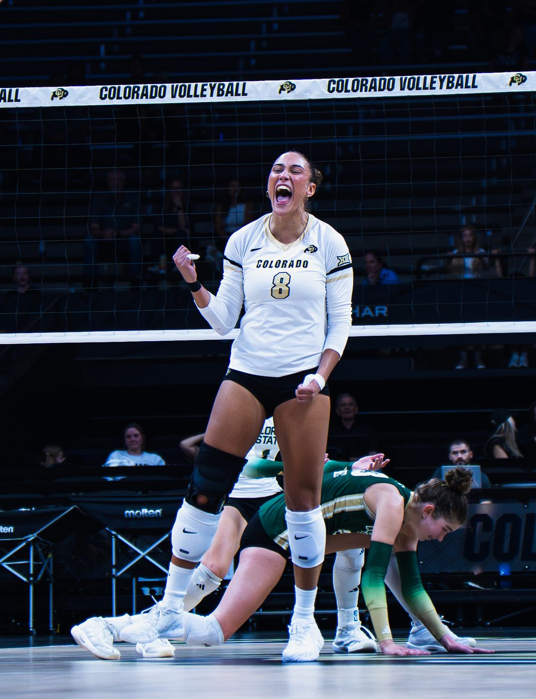
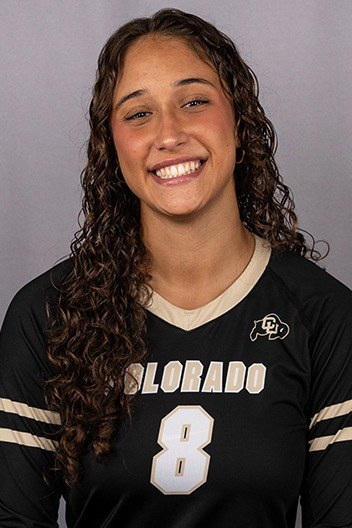

Colorado Buffaloes · Voleibol · Big 12
InésLosada
De la Superliga 2 al Mundial Sub-19 con España y de ahí a Colorado. En su segunda temporada con los Buffaloes es una de las puntas que sostienen el ataque del equipo y una de las voces que la Universidad pone delante de la cámara.

- Dorsal
- 8
- Puesto
- Punta receptora
- Altura
- 1,86 m
- Equipo
- Colorado Buffaloes
NCAA Div. I · Big 12 - Origen
- A Coruña, Galicia
España - Temporada 2026
- 13 partidos
38 sets hasta el 11 oct
Temporada 2026 · datos de las actas oficiales
Lo que firma cada noche
13 de los 16 partidos del equipo hasta el 11 de octubre de 2026, cuando los Buffaloes eran el número 23 del ranking nacional. Media de 2,4 puntos por set.
Puntos por partido
Puntos = kills + aces + bloqueos (0,5 por bloqueo asistido). Las cinco primeras líneas son sus mejores partidos del curso; las que llevan la marca «vídeo» tienen reel publicado en el canal de los Buffaloes.
- 6 sepNorthern Colorado 19,0 14 K + 5 aces vídeo
- 4 oct#21 Baylor 16,5 10 K + 5 aces vídeo
- 11 octKansas State 16,5 11 K + 5 aces vídeo
- 17 sepColorado State 13,0 10 K + 1 ace vídeo
- 2 octTCU 12,0 9 K + 1 ace
- 9 octArizona State 6,0 2 K + 3 aces
- 11 sepOregon State 3,0 1 K + 2 aces
- 25 sepUtah 2,5 2 K
- 28 agoCSUN 2,0 1 K vídeo
- 4 sepWichita State 1,5 1 K vídeo
- 29 agoCentral Arkansas 1,0 1 K vídeo
- 12 sep#16 USC 0,0 Sin puntos · vídeo
- 18 sepColorado State 0,0 Sin puntos
Su locker room oficial · NIL Store
Lleva el 8La camiseta negra de Colorado con el apellido LOSADA y el dorsal 8, y el resto de su línea, en su página de la NIL Store. Cada compra va directa a la jugadora.
BuffsTV · canal oficial de Colorado Athletics
Momentazos
Cuatro partidos en los que fue protagonista, ordenados por los puntos que firmó. Cada tarjeta abre el vídeo completo en YouTube.
 19,0 pts2:02
19,0 pts2:02
Northern Colorado
6 de septiembre. Su mejor partido del curso: 14 kills y 5 aces en la remontada a cinco sets (15-25, 25-20, 16-25, 25-9, 15-6). Habló después en la sala de prensa.
Ver en YouTube 16,5 pts2:56
16,5 pts2:56
#21 Baylor
4 de octubre, en Waco. 10 kills y 5 aces para tumbar al número 21 del país fuera de casa en el Ferrell Center.
Ver en YouTube 16,5 pts1:59
16,5 pts1:59
Kansas State
11 de octubre. 11 kills, 21 ataques y .333 en la remontada 3-2 en el CU Events Center. Volvió a la sala de prensa con el equipo.
Ver en YouTube 13,0 pts3:11
13,0 pts3:11
Colorado State
17 de septiembre. 10 kills en el derbi del estado, la noche en que el 9-0 de las Buffs igualó el mejor arranque de su historia.
Ver en YouTubeEl resto de la temporada
-
 #16 USC · 12 sepVictoria en el Galen Center. Reel completo; su aparición es breve.
0,0puntos · 2:16
#16 USC · 12 sepVictoria en el Galen Center. Reel completo; su aparición es breve.
0,0puntos · 2:16 -
 CSUN · 28 agoPrimer partido de la temporada, en casa. 1 kill.
2,0puntos · 1:58
CSUN · 28 agoPrimer partido de la temporada, en casa. 1 kill.
2,0puntos · 1:58 -
 Wichita State · 4 sepBarrida en tres sets del Buffs Invite.
1,5puntos · 2:39
Wichita State · 4 sepBarrida en tres sets del Buffs Invite.
1,5puntos · 2:39 -
 Central Arkansas · 29 agoSegunda victoria del curso, también en tres sets.
1,0puntos · 1:40
Central Arkansas · 29 agoSegunda victoria del curso, también en tres sets.
1,0puntos · 1:40
El reportaje

«De vidas separadas a un reencuentro en las montañas»
Inés y Tinons Munar Galmes se conocen desde antes de vestir el «Colorado» en el pecho: fueron compañeras en la selección española. El reportaje de CU cuenta cómo acabaron juntas, a 8.000 kilómetros de casa, en la misma plantilla y en el mismo pueblo.
Salas de prensa
-
 Posterior a Colorado State · 17 sepInés en el panel, con la camiseta blanca del 8.
13,0puntos · 10:25
Posterior a Colorado State · 17 sepInés en el panel, con la camiseta blanca del 8.
13,0puntos · 10:25 -
 Posterior a Kansas State · 11 octRueda de prensa tras la remontada 3-2.
16,5puntos · 8:00
Posterior a Kansas State · 11 octRueda de prensa tras la remontada 3-2.
16,5puntos · 8:00 -
 Posterior a Northern Colorado · 6 sepLa rueda de prensa de su mejor partido del curso.
19,0puntos · 6:35
Posterior a Northern Colorado · 6 sepLa rueda de prensa de su mejor partido del curso.
19,0puntos · 6:35
Si te ha gustado lo que hace en la pista, la camiseta negra con su 8 está en su locker room de la NIL Store →
Galería
El 8 en la pista
Fotos de Colorado Athletics, más una de prensa gallega con la selección española. Los créditos están al final de la página.





Ese dorsal se lleva: camiseta Losada 8 en su locker room →
Trayectoria
De A Coruña a Boulder
Cuatro etapas antes de cruzar el Atlántico, y un palmarés que empieza a los 14 años.
-
Hasta los 14 · A Coruña
Formación en Galicia
Empieza en el voleibol gallego, donde llama la atención de los técnicos de la federación española.
-
Con 14 años · Soria
CAEP Soria
Entra en la concentración permanente de Soria. En la Superliga 2 de 2023-24 acaba como máxima anotadora: 431 puntos en 22 partidos.
-
2024-25 · A Coruña
CV Zalaeta
Vuelve a casa para jugar en la Superliga con el club de su ciudad, ya con la selección española en el punto de mira.
-
2025 - hoy · Boulder, Colorado
Colorado Buffaloes
Beca en la División I de la NCAA, en la Big 12. «Freshman» en 2025 con 21 partidos y 65 sets; en 2026, una de las puntas de referencia del equipo.
- 2022-23Mejor receptora del WEVZA Sub-17 Y siete ideal del torneo de Grünheide (Alemania), enero de 2023.
- 2023-24Máxima anotadora de la Superliga 2 431 puntos en 22 partidos con el CAEP Soria, mejor registro de su grupo.
- 2024Campeona de España júnior Con el Arenal Emevé, en la final disputada el 19 de mayo de 2024 en Las Palmas.
- 2024Subcampeona de España cadete Con el JAV Olímpico.
- 2025Mundial Sub-19 de la FIVB con España 120 puntos y un 40,52% de eficacia en ataque.
- 2025Debut en la NCAA 37,5 puntos, 21 partidos, 65 sets y 20 aces en su primera temporada.
- 2026Récord personal con los Buffaloes 19,0 puntos ante Northern Colorado (6 sep): kills, aces y bloqueos.
Carrera NCAA: 34 partidos · 103 sets · 130,5 puntos · 78 kills · 42 aces · 43 digs · 10,5 bloqueos.
Selección española
La camiseta roja
Antes de Boulder hubo España. Con la Sub-17 fue elegida mejor receptora del torneo WEVZA de Grünheide y entró en el siete ideal. Con la Sub-19 jugó el Mundial de la FIVB de 2025, donde terminó con 120 puntos y un 40,52% de eficacia en ataque.
Tienda oficial de los Buffaloes
Vístete el 8
La equipación y el merchandising salen de la tienda oficial de Colorado Athletics. Los enlaces se abren en una pestaña nueva.
La camiseta de Inés
Su página oficial en la NIL Store: la camiseta negra de Colorado con el apellido LOSADA y el dorsal 8, más el resto de su línea de voleibol. Cada compra va a la jugadora.
Ir a su locker roomLa tienda de las jugadoras
El NIL Store de Colorado reúne el merchandising firmado por las jugadoras: camisetas y sudaderas con su nombre, y cada compra va a la deportista.
Ver la colecciónCamiseta de voleibol de Colorado
La camiseta NIL de voleibol femenino de los Buffaloes, en la que se elige jugadora en la ficha del producto. Busca el dorsal 8: es el de Inés.
Ir a la tienda oficialEnlaces comprobados el 14 de octubre de 2026. También hay camisetas de voleibol en la sección de equipaciones de la tienda oficial.